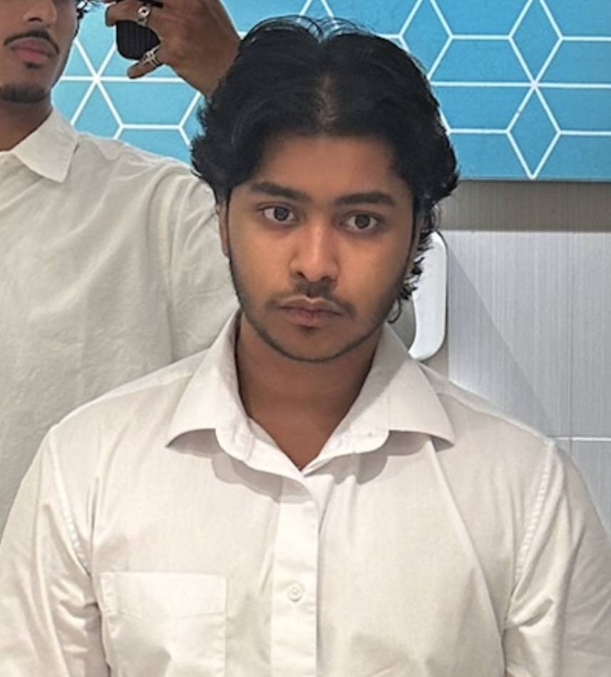

About Me
Hi, I'm Rohit Balaji. I have a strong passion for software development, and the ability to develop what starts as a creative vision, into an immersive, and enjoyable experience. This passion stems from a lifelong love of gaming, which taught me how impactful a well-designed virtual world can be. It inspired me to not only play, but to create my own vision of these seamless front-end interfaces and robust back-end systems.
As a Part II Software Engineering student at the University of Auckland, I'm now channeling this drive into building tools that solve real world frustrations, often starting with my own. As someone with a history of diversity, and a recurring need to adapt to new environments, I believe the most impactful projects are born from empathy, and I'm always looking for opportunities to produce work which can make the lives of those around me even a little easier. In a constantly evolving field, I thrive on staying up-to-date. I take an initiative to explore and integrate new technological advancements, not just to avoid redundancy, but to build the most effective and efficient solutions I'm capable of creating.
Languages & Frameworks

Java

HTML

CSS

JavaScript

JavaFX

C
Skills
Leadership
Proven ability to guide group projects, delegate tasks effectively, and foster a motivated and collaborative team environment.
Workflow Management
Experienced in utilising a range of workflow tracking applications, including Git, and Jira/Scrum.
Problem Solving
A systematic and creative approach to debugging, analyzing challenges, and producing robust, scalable solutions.
UX Design
A strong and reinforced knowledge of UX Design, creating interfaces which feel comfortable to use, while including necessary functionality
Projects
Code Adventure - Gamified CSS Learning
An interactive, fantasy-adventure-themed web application designed to teach the fundamentals of CSS in a fun and engaging way. Players solve coding puzzles to progress through levels, with their progress saved securely using a Firebase backend. This begun as a High School Computer Science Project, but after two years, development has been continued, including a variety of new levels, animations, and features.
Mind Game - AI Colour Guesser
A JavaFX desktop application where players test their wits against a learning AI. This initially started as a University Assignment, however, I've developed a functional GUI to be paired with the original Terminal/Commandline version of the game, as well as implementing a new 'Nightmare' difficulty. The installation and setup instructions are included in the README.md file found in the Github Repository linked below. Are you ready to put your skills to the test against a robot that can read your mind?

Dazey - AI Journal & Note Taker
Dazey is an intelligent AI powered, privacy-first journaling and note-taking app that helps bring clarity and structure to your thoughts. Using local AI(Gemma 3n 4b), it organizes raw thoughts, notes, and reflections into smart categories, detects habit patterns, and includes a Retrieval-Augmented Generation (RAG) chatbot for searching past notes. Built for the GDGCxDEVS Hackathon 2025 by a team of me along with five other second-year students, Dazey won First Place as well as the Emerging Talent award.
Connect With Me
I'm always open to discussing new projects, creative ideas, or opportunities to be part of your vision.